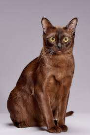

The Burmese cat is a shorthair with gold colored eyes and a playful personality. They are very playful and will stay that way through adulthood. They love attention and are usually quiet but may meow when something is wrong or when they want something from someone.
